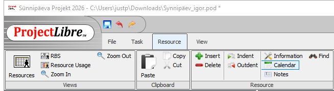

📅 Uue kalendri loomine
Mine Project → Resource → Calendar.

Kalendri menüü
Avaneb vahekaart, kus on näha kõik kalendrid, seaded ja kuupäevad.

Uue test-kalendri loomine
Vajutame nuppu New ja loome uue kalendri nimega TestKalender ning teeme sellest standardkalendri koopia.

Kalendripäevade seadistamine
Uues kalendris saame lisada tööaja ja märkida punasega vabad päevad. Sinisega on märgitud tänane päev.

Kalendri kasutamine
Klõpsame kaks korda kindlale ülesandele, avame jaotise Advanced ja valime rippmenüüst Task Calendar meie loodud kalendri.

Kalender töötab